Module plottools.colors
Color palettes and tools for manipulating colors.
Dictionaries with colors
colors_plain: plain rgb colors.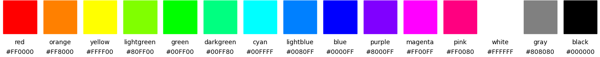
colors_vivid: vivid colors.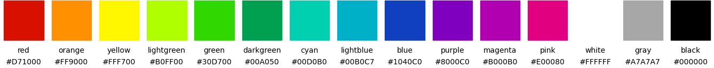
colors_muted: muted colors.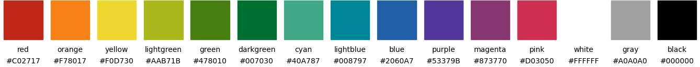
colors_tableau: matplotlib's tableau (tab10) colors.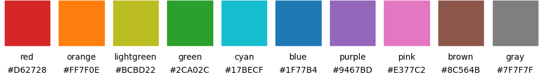
colors_henninger: colors by Joerg Henninger upond which the muted colors are build.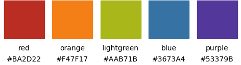
colors_scicomp: colors from the scientific computing script.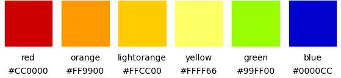
colors_unituebingen: colors of the corporate design of the University of Tuebingen.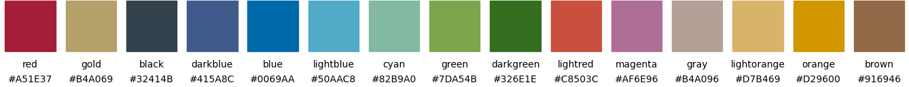
colors_itten: Farbkreis by Johannes Itten, 1961.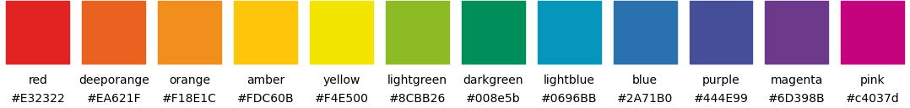
colors_solarized: Ethan Schoonover's color palette, solarized.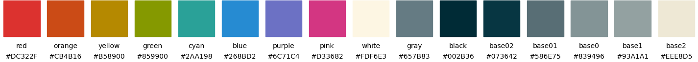
-
colors_material: Google's material color palette.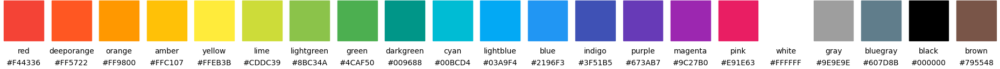
-
palettes: a dictionary with all defined color dictionaries.
Manipulating colors
lighter(): make a color lighter.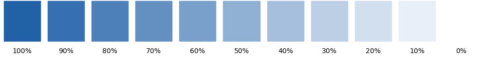
darker(): make a color darker.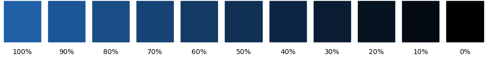
gradient(): interpolate between two colors.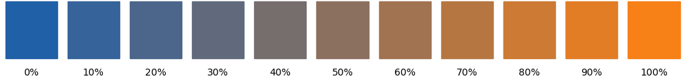
Exporting colors
latex_colors(): print\definecolorcommands for LaTeX.
Color maps
colormap(): generate and register a color map.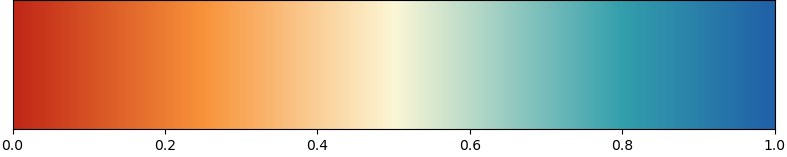
cmap_color(): retrieve color from a color map.
Settings
colors_params(): set colors for the matplotlib color cycler.
Plot colors
plot_colors(): plot all colors of a palette and optionally some lighter and darker variants.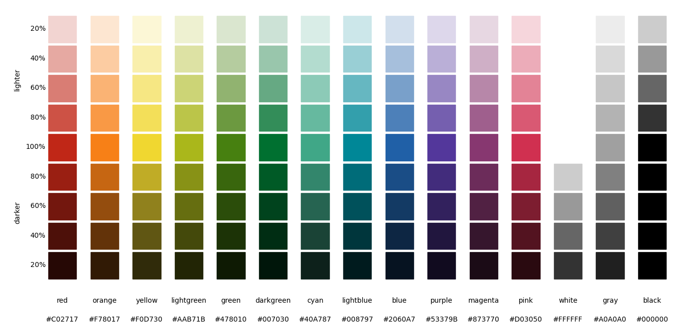
plot_complementary_colors(): plot complementary colors of a palette on top of each other.plot_color_comparison(): plot matching colors of severals palettes on top of each other.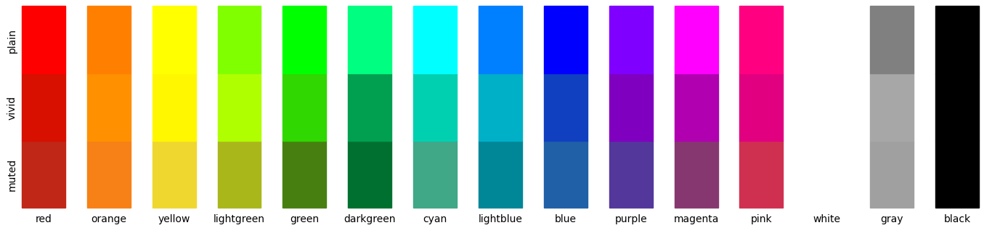
plot_colormap(): plot a color map and its luminance.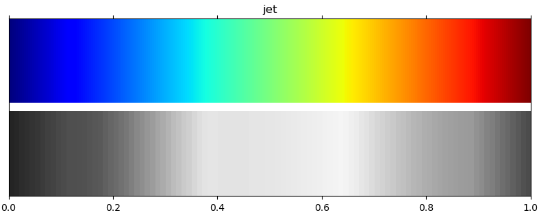
Expand source code
"""
Color palettes and tools for manipulating colors.
## Dictionaries with colors
- `colors_plain`: plain rgb colors. 
- `colors_vivid`: vivid colors. 
- `colors_muted`: muted colors. 
- `colors_tableau`: matplotlib's tableau (tab10) colors.

- `colors_henninger`: colors by Joerg Henninger upond which the muted colors are build.

- `colors_scicomp`: colors from the scientific computing script.

- `colors_unituebingen`: colors of the corporate design of the University of Tuebingen.

- `colors_itten`: Farbkreis by Johannes Itten, 1961. 
- `colors_solarized`: Ethan Schoonover's color palette, solarized.

- `colors_material`: Google's material color palette.

- `palettes`: a dictionary with all defined color dictionaries.
## Manipulating colors
- `lighter()`: make a color lighter. 
- `darker()`: make a color darker. 
- `gradient()`: interpolate between two colors. 
## Exporting colors
- `latex_colors()`: print `\\definecolor` commands for LaTeX.
## Color maps
- `colormap()`: generate and register a color map. 
- `cmap_color()`: retrieve color from a color map.
## Settings
- `colors_params()`: set colors for the matplotlib color cycler.
## Plot colors
- `plot_colors()`: plot all colors of a palette and optionally some lighter and darker variants.

- `plot_complementary_colors()`: plot complementary colors of a palette on top of each other.

- `plot_color_comparison()`: plot matching colors of severals palettes on top of each other.

- `plot_colormap()`: plot a color map and its luminance.

"""
from collections import OrderedDict
import numpy as np
import matplotlib as mpl
import matplotlib.pyplot as plt
from matplotlib.colors import LinearSegmentedColormap
try:
from matplotlib.cm import get_cmap, register_cmap
new_cm = False
except ImportError:
new_cm = True
try:
from matplotlib.colors import colorConverter as cc
except ImportError:
import matplotlib.colors as cc
try:
from matplotlib.colors import to_hex
except ImportError:
from matplotlib.colors import rgb2hex as to_hex
""" Plain rgb colors. """
colors_plain = OrderedDict()
colors_plain['red'] = '#FF0000'
colors_plain['orange'] = '#FF8000'
colors_plain['yellow'] = '#FFFF00'
colors_plain['lightgreen'] = '#80FF00' # Chartreuse
colors_plain['green'] = '#00FF00' # Lime
#colors_plain['darkgreen'] = '#008000' # Green
colors_plain['darkgreen'] = '#00FF80' # SpringGreen
colors_plain['cyan'] = '#00FFFF'
colors_plain['lightblue'] = '#0080FF'
colors_plain['blue'] = '#0000FF'
colors_plain['purple'] = '#8000FF'
colors_plain['magenta'] = '#FF00FF'
colors_plain['pink'] = '#FF0080'
colors_plain['white'] = '#FFFFFF'
colors_plain['gray'] = '#808080'
colors_plain['black'] = '#000000'
""" Vivid colors. """
colors_vivid = OrderedDict()
colors_vivid['red'] = '#D71000'
colors_vivid['orange'] = '#FF9000'
colors_vivid['yellow'] = '#FFF700'
colors_vivid['lightgreen'] = '#B0FF00'
colors_vivid['green'] = '#30D700'
colors_vivid['darkgreen'] = '#00A050'
colors_vivid['cyan'] = '#00D0B0'
colors_vivid['lightblue'] = '#00B0C7'
colors_vivid['blue'] = '#1040C0'
colors_vivid['purple'] = '#8000C0'
colors_vivid['magenta'] = '#B000B0'
colors_vivid['pink'] = '#E00080'
colors_vivid['white'] = '#FFFFFF'
colors_vivid['gray'] = '#A7A7A7'
colors_vivid['black'] = '#000000'
""" Muted colors. """
colors_muted = OrderedDict()
colors_muted['red'] = '#C02717'
colors_muted['orange'] = '#F78017'
colors_muted['yellow'] = '#F0D730'
colors_muted['lightgreen'] = '#AAB71B'
colors_muted['green'] = '#478010'
colors_muted['darkgreen'] = '#007030'
colors_muted['cyan'] = '#40A787'
colors_muted['lightblue'] = '#008797'
colors_muted['blue'] = '#2060A7'
colors_muted['purple'] = '#53379B'
colors_muted['magenta'] = '#873770'
colors_muted['pink'] = '#D03050'
colors_muted['white'] = '#FFFFFF'
colors_muted['gray'] = '#A0A0A0'
colors_muted['black'] = '#000000'
""" matplotlib's tableau (tab10) colors. """
colors_tableau = OrderedDict()
colors_tableau['red'] = '#D62728'
colors_tableau['orange'] = '#FF7F0E'
colors_tableau['lightgreen'] = '#BCBD22' # olive
colors_tableau['green'] = '#2CA02C'
colors_tableau['cyan'] = '#17BECF'
colors_tableau['blue'] = '#1F77B4'
colors_tableau['purple'] = '#9467BD'
colors_tableau['pink'] = '#E377C2'
colors_tableau['brown'] = '#8C564B'
colors_tableau['gray'] = '#7F7F7F'
""" Colors by Joerg Henninger. """
colors_henninger = OrderedDict()
colors_henninger['red'] = '#BA2D22'
colors_henninger['orange'] = '#F47F17'
colors_henninger['lightgreen'] = '#AAB71B'
colors_henninger['blue'] = '#3673A4'
colors_henninger['purple'] = '#53379B'
""" Colors from the scientific computing script. """
colors_scicomp = OrderedDict()
colors_scicomp['red'] = '#CC0000'
colors_scicomp['orange'] = '#FF9900'
colors_scicomp['lightorange'] = '#FFCC00'
colors_scicomp['yellow'] = '#FFFF66'
colors_scicomp['green'] = '#99FF00'
colors_scicomp['blue'] = '#0000CC'
""" Colors of the corporate design of the University of Tuebingen.
The first three are the primary colors, the remaining ones the secondary colors.
"""
colors_unituebingen = OrderedDict()
colors_unituebingen['red'] = '#A51E37'
colors_unituebingen['gold'] = '#B4A069'
colors_unituebingen['black'] = '#32414B'
colors_unituebingen['darkblue'] = '#415A8C'
colors_unituebingen['blue'] = '#0069AA'
colors_unituebingen['lightblue'] = '#50AAC8'
colors_unituebingen['cyan'] = '#82B9A0'
colors_unituebingen['green'] = '#7DA54B'
colors_unituebingen['darkgreen'] = '#326E1E'
colors_unituebingen['lightred'] = '#C8503C'
colors_unituebingen['magenta'] = '#AF6E96'
colors_unituebingen['gray'] = '#B4A096'
colors_unituebingen['lightorange'] = '#D7B469'
colors_unituebingen['orange'] = '#D29600'
colors_unituebingen['brown'] = '#916946'
""" Farbkreis by Johannes Itten, 1961.
Colors taken from:
Originally by MalteAhrens at de.wikipedia. Vectorization by User:SidShakal - Raster version from Wikimedia Commons., Gemeinfrei, https://commons.wikimedia.org/w/index.php?curid=3574696
"""
colors_itten = OrderedDict()
colors_itten['red'] = '#E32322'
colors_itten['deeporange'] = '#EA621F'
colors_itten['orange'] = '#F18E1C'
colors_itten['amber'] = '#FDC60B'
colors_itten['yellow'] = '#F4E500'
colors_itten['lightgreen'] = '#8CBB26'
colors_itten['darkgreen'] = '#008e5b' # green
colors_itten['lightblue'] = '#0696BB'
colors_itten['blue'] = '#2A71B0'
colors_itten['purple'] = '#444E99'
colors_itten['magenta'] = '#6D398B'
colors_itten['pink'] = '#c4037d'
""" Ethan Schoonover's color palette, solarized. Taken from the LaTeX xcolor-solarized package. """
colors_solarized = OrderedDict()
colors_solarized['red'] = '#DC322F'
colors_solarized['orange'] = '#CB4B16'
colors_solarized['yellow'] = '#B58900'
colors_solarized['green'] = '#859900'
colors_solarized['cyan'] = '#2AA198'
colors_solarized['blue'] = '#268BD2'
colors_solarized['purple'] = '#6C71C4' # violet
colors_solarized['pink'] = '#D33682' # magenta
colors_solarized['white'] = '#FDF6E3'
colors_solarized['gray'] = '#657B83'
colors_solarized['black'] = '#002B36'
colors_solarized['base02'] = '#073642'
colors_solarized['base01'] = '#586E75'
colors_solarized['base0'] = '#839496'
colors_solarized['base1'] = '#93A1A1'
colors_solarized['base2'] = '#EEE8D5'
""" Google's material color palette. Taken from the LaTeX xcolor-material package. """
colors_material = OrderedDict()
colors_material['red'] = '#F44336'
colors_material['deeporange'] = '#FF5722'
colors_material['orange'] = '#FF9800'
colors_material['amber'] = '#FFC107'
colors_material['yellow'] = '#FFEB3B'
colors_material['lime'] = '#CDDC39'
colors_material['lightgreen'] = '#8BC34A'
colors_material['green'] = '#4CAF50'
colors_material['darkgreen'] = '#009688' # teal
colors_material['cyan'] = '#00BCD4'
colors_material['lightblue'] = '#03A9F4'
colors_material['blue'] = '#2196F3'
colors_material['indigo'] = '#3F51B5'
colors_material['purple'] = '#673AB7' # deeppurple
colors_material['magenta'] = '#9C27B0' # purple
colors_material['pink'] = '#E91E63'
colors_material['white'] = '#FFFFFF'
colors_material['gray'] = '#9E9E9E'
colors_material['bluegray'] = '#607D8B'
colors_material['black'] = '#000000'
colors_material['brown'] = '#795548'
""" All color palettes. """
palettes = OrderedDict()
palettes['plain'] = colors_plain
palettes['vivid'] = colors_vivid
palettes['muted'] = colors_muted
palettes['tableau'] = colors_tableau
palettes['henninger'] = colors_henninger
palettes['scicomp'] = colors_scicomp
palettes['unituebingen'] = colors_unituebingen
palettes['itten'] = colors_itten
palettes['solarized'] = colors_solarized
palettes['material'] = colors_material
def lighter(color, lightness):
""" Make a color lighter.

Parameters
----------
color: dict or matplotlib color spec
A matplotlib color (hex string, name color string, rgb tuple)
or a dictionary with an 'color' or 'facecolor' key.
lightness: float
The smaller the lightness, the lighter the returned color.
A lightness of 0 returns white.
A lightness of 1 leaves the color untouched.
A lightness of 2 returns black.
Returns
-------
color: string or dict
The lighter color as a hexadecimal RGB string (e.g. '#rrggbb').
If `color` is a dictionary, a copy of the dictionary is returned
with the value of 'color' or 'facecolor' set to the lighter color.
Examples
--------
For 40% lightness of blue do
```py
import plottools.colors as c
colors = c.palettes['muted']
lightblue = c.lighter(colors['blue'], 0.4)
```
"""
try:
c = color['color']
cd = dict(**color)
cd['color'] = lighter(c, lightness)
return cd
except (KeyError, TypeError):
try:
c = color['facecolor']
cd = dict(**color)
cd['facecolor'] = lighter(c, lightness)
return cd
except (KeyError, TypeError):
if lightness > 2:
lightness = 2
if lightness > 1:
return darker(color, 2.0-lightness)
if lightness < 0:
lightness = 0
r, g, b = cc.to_rgb(color)
rl = r + (1.0-lightness)*(1.0 - r)
gl = g + (1.0-lightness)*(1.0 - g)
bl = b + (1.0-lightness)*(1.0 - b)
return to_hex((rl, gl, bl)).upper()
def darker(color, saturation):
""" Make a color darker.

Parameters
----------
color: dict or matplotlib color spec
A matplotlib color (hex string, name color string, rgb tuple)
or a dictionary with an 'color' or 'facecolor' key.
saturation: float
The smaller the saturation, the darker the returned color.
A saturation of 0 returns black.
A saturation of 1 leaves the color untouched.
A saturation of 2 returns white.
Returns
-------
color: string or dictionary
The darker color as a hexadecimal RGB string (e.g. '#rrggbb').
If `color` is a dictionary, a copy of the dictionary is returned
with the value of 'color' or 'facecolor' set to the darker color.
Examples
--------
For 40% darker blue do
```py
import plottools.colors as c
colors = c.palettes['muted']
darkblue = c.darker(colors['blue'], 0.4)
```
"""
try:
c = color['color']
cd = dict(**color)
cd['color'] = darker(c, saturation)
return cd
except (KeyError, TypeError):
try:
c = color['facecolor']
cd = dict(**color)
cd['facecolor'] = darker(c, saturation)
return cd
except (KeyError, TypeError):
if saturation > 2:
sauration = 2
if saturation > 1:
return lighter(color, 2.0-saturation)
if saturation < 0:
saturation = 0
r, g, b = cc.to_rgb(color)
rd = r*saturation
gd = g*saturation
bd = b*saturation
return to_hex((rd, gd, bd)).upper()
def gradient(color0, color1, r):
""" Interpolate between two colors.

Parameters
----------
color0: dict or matplotlib color spec
A matplotlib color (hex string, name color string, rgb tuple)
or a dictionary with an 'color' or 'facecolor' key.
color1: dict or matplotlib color spec
A matplotlib color (hex string, name color string, rgb tuple)
or a dictionary with an 'color' or 'facecolor' key.
r: float
Value between 0 and for interpolating between the two colors.
r=0 returns color0, r=1 returns color1.
Returns
-------
color: string or dict
The interpolated color as a hexadecimal RGB string (e.g. '#rrggbb').
If at least one of the colors is a dictionary, then return a copy of the
first dictionary with the value of 'color' or 'facecolor'
set to the interpolated color.
Raises
------
KeyError:
If a `color0` or `color1` is a dictionary, but does not contain a
'color' or 'facecolor' key.
Examples
--------
For 30% transition between blue and orange do
```py
import plottools.colors as c
colors = c.palettes['muted']
color = c.gradient(colors['blue'], colors['orange'], 0.3)
```
"""
try:
cd0 = dict(**color0)
if 'color' in cd0:
key0 = 'color'
color0 = cd0[key0]
elif 'facecolor' in cd0:
key0 = 'facecolor'
color0 = cd0[key0]
else:
raise KeyError('no color in color0 dictionary')
except (TypeError, AttributeError):
cd0 = None
try:
cd1 = dict(**color1)
if 'color' in cd1:
key1 = 'color'
color1 = cd1[key1]
elif 'facecolor' in cd1:
key1 = 'facecolor'
color1 = cd1[key1]
else:
raise KeyError('no color in color1 dictionary')
except (TypeError, AttributeError):
cd1 = None
r0, g0, b0 = cc.to_rgb(color0)
r1, g1, b1 = cc.to_rgb(color1)
if r < 0:
r = 0
if r > 1:
r = 1
rg = r0 + r*(r1 - r0)
gg = g0 + r*(g1 - g0)
bg = b0 + r*(b1 - b0)
cs = to_hex((rg, gg, bg)).upper()
if cd0:
cd0[key0] = cs
return cd0
elif cd1:
cd1[key1] = cs
return cd1
else:
return cs
def latex_colors(colors, name='', model='rgb'):
""" Print `\\definecolor` commands for LaTeX.
Copy the color definitions from the console into you LaTeX
preamble. Do not forget to load the `color` or `xcolor` packages before:
```tex
\\usepackage{xcolor}
```
You then can use the newly defined colors with the usual commands, like for example:
```tex
\\textcolor{red}{Some text in my special red.}
```
Parameters
----------
colors: matplotlib color or dict of matplotlib colors
A dictionary with names and rgb hex-strings of colors
or a single matplotlib color.
name: string
If colors is a single color, then name is the name of the color.
model: 'rgb', 'RGB' or 'HTML'
Color model.
Examples
--------
Print LaTeX color definition for a single color:
```py
import plottools.colors as c
colors = c.palettes['muted']
c.latex_colors(colors['red'], 'red')
```
writes to the console
```tex
\\definecolor{red}{rgb}{0.753,0.153,0.090}
```
Or print color definitions for a whole palette:
```py
c.latex_colors(c.colors_vivid)
```
writes to the console
```tex
\\definecolor{red}{rgb}{0.843,0.063,0.000}
\\definecolor{orange}{rgb}{1.000,0.565,0.000}
\\definecolor{yellow}{rgb}{1.000,0.969,0.000}
...
```
"""
if isinstance(colors, dict):
for cn in colors:
latex_colors(colors[cn], cn)
else:
r, g, b = cc.to_rgb(colors)
if model == 'rgb':
print('\\definecolor{%s}{rgb}{%.3f,%.3f,%.3f}' % (name, r, g, b))
else:
r *= 255
g *= 255
b *= 255
if model == 'RGB':
print('\\definecolor{%s}{RGB}{%.0f,%.0f,%.0f}' % (name, r, g, b))
elif model == 'HTML':
print('\\definecolor{%s}{HTML}{%02X%02X%02X}' % (name, r, g, b))
else:
raise ValueError('color model "%s" not supported' % model)
def colormap(name, colors, values=None):
""" Generate and register a color map.
This is a simple shortcut to the cumbersome names and imports needed for
`matplotlib.colors.LinearSegmentedColormap` and `matplotlib.cm.register_cmap`.
Parameters
----------
name: string
Name of the color map. You can use this name to set the colormap, e.g.
```
ax.contourf(x, y, z, cmap=name)
```
colors: sequence of matplotlib color specifications
The colors from which to generate the color map.
values: sequence of floats or None
If None, `colors` are equidistantly mapped on the range 0 to 1.
Otherwise for each color the position in the colors map range.
Returns
-------
cmap: matplotlib colormap
The color map generated from `colors`.
Examples
--------
Generate and register a color map from colors like this:
```py
import plottools.colors as c
colors = c.palettes['muted']
cmcolors = [colors['red'],
c.lighter(colors['orange'], 0.85),
c.lighter(colors['yellow'], 0.2),
c.lighter(colors['lightblue'], 0.8),
colors['blue']]
cmvalues = [0.0, 0.25, 0.5, 0.8, 1.0]
c.colormap('RYB', cmcolors, cmvalues)
```
The new colormap can then be used directly by its name for the `cmap`
arguments of `imshow()`, `pcolormesh()`, `contourf()`, etc.:
```py
ax.imshow(image, cmap='RYB')
```

"""
if values is not None:
colors = list(zip(values, colors))
cmap = LinearSegmentedColormap.from_list(name, colors)
if new_cm:
mpl.colormaps.register(cmap)
else:
register_cmap(cmap=cmap)
return cmap
def cmap_color(cmap, x, alpha=None):
""" Retrieve color from a color map.
Parameters
----------
cmap: string or matplotib colormap
Name or instance of a matplotlib color map.
x: float or sequence of floats
The fraction along the color map to be converted in to a color
(between 0 and 1).
alpha: float or None
If specified, alpha value of the returned color.
Returns
-------
color: tuple of floats, or sequence thereof.
RGBA value of selected color.
Examples
--------
Retrieve a single color from a color map:
```py
jet_red = c.cmap_color('jet', 0.0)
```
"""
if not isinstance(cmap, mpl.colors.Colormap):
if new_cm:
cmap = mpl.colormaps[cmap]
else:
cmap = get_cmap(cmap)
return cmap(x, alpha)
def colors_params(palette=None, colors=None, cmap=None):
""" Set colors for the matplotlib color cycler.
Only parameters that are not `None` are updated.
Parameters
----------
palette: dict
A dictionary with named colors.
colors: list of strings
Names of the colors from `palette` that should go into the color cycler
(rcParam `axes.prop_cycle` or `axes.color_cycle`).
cmap: string
Name of default color map (`rcParam['image.cmap']`).
"""
if palette is not None and colors is not None:
color_cycle = [palette[c] for c in colors if c in palette]
if 'axes.prop_cycle' in mpl.rcParams:
from cycler import cycler
mpl.rcParams['axes.prop_cycle'] = cycler(color=color_cycle)
else:
mpl.rcParams['axes.color_cycle'] = color_cycle
if cmap is not None:
mpl.rcParams['image.cmap'] = cmap
def plot_colors(ax, colors, n=1):
""" Plot all colors of a palette and optionally some lighter and darker variants.
Parameters
----------
ax: matplotlib axes
Subplot to use for plotting the colors.
colors: dict
A dictionary with names and matplotlib colors.
n: int
If one, plot the colors of the palette only.
If larger than one, plot in addition that many
lighter and darker versions of the colors.
Examples
--------
```
import matplotlib.pyplot as plt
import plottools.colors as c
fig, ax = plt.subplots()
c.plot_colors(ax, c.palettes['muted'], 5)
```

"""
if n < 1:
n = 1
nn = 1 + 2*(n-1)
rectx = np.array([0.0, 1.0, 1.0, 0.0, 0.0])
recty = np.array([0.0, 0.0, 1.0, 1.0, 0.0])
if n > 1:
recty *= 0.9
for k, c in enumerate(colors):
for i in range(-n+1, n):
if i < 0:
ax.fill(rectx + 1.5*k, (i+n-1+recty)/nn, color=darker(colors[c], (n+i)/float(n)))
elif i > 0:
ax.fill(rectx + 1.5*k, (i+n-1+recty)/nn, color=lighter(colors[c], (n-i)/float(n)))
else:
ax.fill(rectx + 1.5*k, (i+n-1+recty)/nn, color=colors[c])
ax.text(0.5 + 1.5*k, -0.09, c, ha='center')
ax.text(0.5 + 1.5*k, -0.16, colors[c], ha='center')
if n > 1:
for i in range(-n+1, n):
if i < 0:
ax.text(-0.1, (i+n-0.6)/nn, '%.0f%%' % (100.0*(n+i)/float(n)), ha='right')
elif i > 0:
ax.text(-0.1, (i+n-0.6)/nn, '%.0f%%' % (100.0*(n-i)/float(n)), ha='right')
else:
ax.text(-0.1, (i+n-0.6)/nn, '100%', ha='right')
ax.text(-1.1, 0.75, 'lighter', ha='center', va='center', rotation='vertical')
ax.text(-1.1, 0.25, 'darker', ha='center', va='center', rotation='vertical')
ax.set_xlim(-1.5, len(colors)*1.5)
else:
ax.set_xlim(-0.5, len(colors)*1.5)
ax.set_ylim(-0.2, 1.05)
def plot_complementary_colors(ax, colors, n=0):
""" Plot complementary colors of a palette on top of each other.
Parameters
----------
ax: matplotlib axes
Subplot to use for plotting the colors.
colors: dict
A dictionary with names and matplotlib colors.
n: int
Number of additional gradient values to be plotted inbetween the complementary colors.
Examples
--------
```
import matplotlib.pyplot as plt
import plottools.colors as c
fig, ax = plt.subplots()
c.plot_complementary_colors(ax, c.palettes['muted'])
```

"""
rectx = np.array([0.0, 1.0, 1.0, 0.0, 0.0])
recty = np.array([0.0, 0.0, 1.0, 1.0, 0.0])
if n > 0:
recty *= 0.9
n += 2
dx = 1.0/(n-1)
m = 0
if 'red' in colors and 'green' in colors:
for k, x in enumerate(np.linspace(0.0, 1.0, n)):
ax.fill(rectx + 1.5*m, recty + k, color=gradient(colors['red'], colors['green'], x))
m += 1
if 'orange' in colors and 'blue' in colors:
for k, x in enumerate(np.linspace(0.0, 1.0, n)):
ax.fill(rectx + 1.5*m, recty + k, color=gradient(colors['orange'], colors['blue'], x))
m += 1
if 'yellow' in colors and 'magenta' in colors:
for k, x in enumerate(np.linspace(0.0, 1.0, n)):
ax.fill(rectx + 1.5*m, recty + k, color=gradient(colors['yellow'], colors['magenta'], x))
m += 1
if 'pink' in colors and 'cyan' in colors:
for k, x in enumerate(np.linspace(0.0, 1.0, n)):
ax.fill(rectx + 1.5*m, recty + k, color=gradient(colors['pink'], colors['cyan'], x))
m += 1
if 'pink' in colors and 'blue' in colors:
for k, x in enumerate(np.linspace(0.0, 1.0, n)):
ax.fill(rectx + 1.5*m, recty + k, color=gradient(colors['blue'], colors['pink'], x))
m += 1
ax.set_xlim(-0.5, m*1.5)
ax.set_ylim(-0.1, n + 0.1)
def plot_color_comparison(ax, colorsa, *args):
""" Plot matching colors of severals palettes on top of each other.
Parameters
----------
ax: matplotlib axes
Subplot to use for plotting the colors.
colorsa: dict or tuple (dict, string) or string
A dictionary with names and matplotlib colors.
This is the reference palette which is plotted completely at the bottom.
The optional second name is used as a string to annotate the colors.
Alternatively, just the name of the color palette in `palettes`.
args: list of dicts or tuples (dict, string) or strings
Further dictionaries with names and matplotlib colors.
Colors with names matching the ones from `colorsa` are plotted on top.
The optional second element is used as a string to annotated the colors.
Alternatively, just the names of the color palettes in `palettes`.
Examples
--------
```
import matplotlib.pyplot as plt
import plottools.colors as c
fig, ax = plt.subplots()
c.plot_color_comparison(ax, ('muted', 'vivid', 'plain'))
```

"""
rectx = np.array([0.0, 1.0, 1.0, 0.0, 0.0])
recty = np.array([0.0, 0.0, 1.0, 1.0, 0.0])
namea = None
if isinstance(colorsa, (list, tuple)):
colorsa = colorsa[0]
namea = colorsa[1]
elif not isinstance(colorsa, dict):
namea = colorsa
colorsa = palettes[colorsa]
if namea is not None:
ax.text(-0.1, 0.5, namea, rotation='vertical', ha='right', va='center')
for k, c in enumerate(colorsa):
ax.fill(rectx + 1.5*k, recty + 0.0, color=colorsa[c])
for i, cbi in enumerate(args):
colorsb = cbi
nameb = None
if isinstance(cbi, (list, tuple)):
colorsb = cbi[0]
nanmeb = cbi[1]
elif not isinstance(cbi, dict):
colorsb = palettes[cbi]
nameb = cbi
if k == 0 and nameb is not None:
ax.text(-0.1, 1.5+i, nameb, rotation='vertical', ha='right', va='center')
if c in colorsb:
ax.fill(rectx + 1.5*k, recty + 1 + i, color=colorsb[c])
ax.text(0.5 + 1.5*k, -0.2, c, ha='center')
ax.set_xlim(-0.5, len(colorsa)*1.5)
ax.set_ylim(-0.3, 1.1 + len(args))
def plot_colormap(ax, cmap, luminance=True):
""" Plot a color map and its luminance.
Parameters
----------
ax: matplotlib axes
Axes for plotting gradient of the color map.
cmap: string or matplotlib color map
Color map to be plotted.
luminance: bool
If True, also plot a gradient of the luminance of the color map.
Requires the `colorspacious` package.
Examples
--------
```
import matplotlib.pyplot as plt
import plottools.colors as c
fig, ax = plt.subplots()
c.plot_colormap(ax, 'jet', True)
```

"""
cmap = get_cmap(cmap)
# color map:
gradient = np.linspace(0.0, 1.0, 256)
gradient = np.vstack((gradient, gradient))
ax.set_title(cmap.name)
ax.imshow(gradient, cmap=cmap, aspect='auto', extent=(0.0, 1.0, 1.1, 2.1))
ax.set_ylim(1.1, 2.1)
# luminance:
if luminance:
try:
from colorspacious import cspace_converter
x = np.linspace(0.0, 1.0, 100)
rgb = cmap(x)[np.newaxis, :, :3]
lab = cspace_converter("sRGB1", "CAM02-UCS")(rgb)
L = lab[0, :, 0]
L = np.float32(np.vstack((L, L, L)))
ax.imshow(L, aspect='auto', cmap='binary_r', vmin=0.0, vmax=100.0,
extent=(0.0, 1.0, 0.0, 1.0))
ax.set_ylim(0.0, 2.1)
except:
print('failed to plot luminance gradient')
raise
ax.set_yticks([])
def demo(n=1, complementary=False, *args):
""" Plot one or more color palettes or color maps.
If only one color palette is specified in `args`, then plot this color palette
in the following ways:
- complementary colors plotted on top of each other if `complementary` is
set `True` (using `plot_complementary_colors()`).
- complementary colors with `n` intermediate colors, for `n>1` and `complementary`
set `True` (using `plot_complementary_colors()`).
- just the plain color palette, if `n==1` (using `plot_colors()`).
- the color palette with darker and lighter colors for `n>1` using `plot_colors()`.
- if a color map is specified, plot the map and its luminance using `plot_colormap()`.
If more than one color palette is specified, the color palettes are
plotted on top of each other using `plot_color_comparison()`. Only
the colors named by the first palette are drawn. If `args` contains
the single element `all`, then all available color palettes are
compared.
Parameters
----------
n: int
- 1: plot the selected color palette
- n>1: plot the selected color palette with n-1 lighter and darker colors or
n gradient values for 'complementary'
complementary: bool
If `True`, plot complementary colors of the selected palette
*args: list of strings
names of color palettes or color maps.
"""
fig, ax = plt.subplots(figsize=(12, 6))
fig.subplots_adjust(left=0.05, right=0.98, bottom=0.05, top=0.95)
if len(args) == 0:
args = ('muted',)
if len(args) == 1 and args[0] != 'all':
if args[0] in palettes:
palette = palettes[args[0]]
else:
try:
plot_colormap(ax, args[0])
plt.show()
except:
print('unknown color palette %s!' % args[0])
print('available color palettes: ' + ', '.join(palettes.keys()) + '.')
return
if complementary:
plot_complementary_colors(ax, palette, n-1)
else:
plot_colors(ax, palette, n)
else:
if args[0] == 'all':
cpalettes = list(palettes.keys())
else:
cpalettes = []
for c in args:
if not c in palettes:
print('unknown color palette %s!' % c)
print('available color palettes: ' + ', '.join(palettes.keys()) + '.')
else:
cpalettes.append(c)
plot_color_comparison(ax, *cpalettes)
plt.show()
if __name__ == "__main__":
import sys
n = 1
compl = False
names = sys.argv[1:]
if len(names) > 0:
try:
n = int(names[-1])
names.pop()
except ValueError:
pass
if len(names) > 0 and names[-1] in 'complementary':
names.pop()
compl = True
demo(n, compl, *names)Functions
def lighter(color, lightness)-
Make a color lighter.
Parameters
color:dictormatplotlib color spec- A matplotlib color (hex string, name color string, rgb tuple) or a dictionary with an 'color' or 'facecolor' key.
lightness:float- The smaller the lightness, the lighter the returned color. A lightness of 0 returns white. A lightness of 1 leaves the color untouched. A lightness of 2 returns black.
Returns
color:stringordict- The lighter color as a hexadecimal RGB string (e.g. '#rrggbb').
If
coloris a dictionary, a copy of the dictionary is returned with the value of 'color' or 'facecolor' set to the lighter color.
Examples
For 40% lightness of blue do
import plottools.colors as c colors = c.palettes['muted'] lightblue = c.lighter(colors['blue'], 0.4)Expand source code
def lighter(color, lightness): """ Make a color lighter.  Parameters ---------- color: dict or matplotlib color spec A matplotlib color (hex string, name color string, rgb tuple) or a dictionary with an 'color' or 'facecolor' key. lightness: float The smaller the lightness, the lighter the returned color. A lightness of 0 returns white. A lightness of 1 leaves the color untouched. A lightness of 2 returns black. Returns ------- color: string or dict The lighter color as a hexadecimal RGB string (e.g. '#rrggbb'). If `color` is a dictionary, a copy of the dictionary is returned with the value of 'color' or 'facecolor' set to the lighter color. Examples -------- For 40% lightness of blue do ```py import plottools.colors as c colors = c.palettes['muted'] lightblue = c.lighter(colors['blue'], 0.4) ``` """ try: c = color['color'] cd = dict(**color) cd['color'] = lighter(c, lightness) return cd except (KeyError, TypeError): try: c = color['facecolor'] cd = dict(**color) cd['facecolor'] = lighter(c, lightness) return cd except (KeyError, TypeError): if lightness > 2: lightness = 2 if lightness > 1: return darker(color, 2.0-lightness) if lightness < 0: lightness = 0 r, g, b = cc.to_rgb(color) rl = r + (1.0-lightness)*(1.0 - r) gl = g + (1.0-lightness)*(1.0 - g) bl = b + (1.0-lightness)*(1.0 - b) return to_hex((rl, gl, bl)).upper() def darker(color, saturation)-
Make a color darker.
Parameters
color:dictormatplotlib color spec- A matplotlib color (hex string, name color string, rgb tuple) or a dictionary with an 'color' or 'facecolor' key.
saturation:float- The smaller the saturation, the darker the returned color. A saturation of 0 returns black. A saturation of 1 leaves the color untouched. A saturation of 2 returns white.
Returns
color:stringordictionary- The darker color as a hexadecimal RGB string (e.g. '#rrggbb').
If
coloris a dictionary, a copy of the dictionary is returned with the value of 'color' or 'facecolor' set to the darker color.
Examples
For 40% darker blue do
import plottools.colors as c colors = c.palettes['muted'] darkblue = c.darker(colors['blue'], 0.4)Expand source code
def darker(color, saturation): """ Make a color darker.  Parameters ---------- color: dict or matplotlib color spec A matplotlib color (hex string, name color string, rgb tuple) or a dictionary with an 'color' or 'facecolor' key. saturation: float The smaller the saturation, the darker the returned color. A saturation of 0 returns black. A saturation of 1 leaves the color untouched. A saturation of 2 returns white. Returns ------- color: string or dictionary The darker color as a hexadecimal RGB string (e.g. '#rrggbb'). If `color` is a dictionary, a copy of the dictionary is returned with the value of 'color' or 'facecolor' set to the darker color. Examples -------- For 40% darker blue do ```py import plottools.colors as c colors = c.palettes['muted'] darkblue = c.darker(colors['blue'], 0.4) ``` """ try: c = color['color'] cd = dict(**color) cd['color'] = darker(c, saturation) return cd except (KeyError, TypeError): try: c = color['facecolor'] cd = dict(**color) cd['facecolor'] = darker(c, saturation) return cd except (KeyError, TypeError): if saturation > 2: sauration = 2 if saturation > 1: return lighter(color, 2.0-saturation) if saturation < 0: saturation = 0 r, g, b = cc.to_rgb(color) rd = r*saturation gd = g*saturation bd = b*saturation return to_hex((rd, gd, bd)).upper() def gradient(color0, color1, r)-
Interpolate between two colors.
Parameters
color0:dictormatplotlib color spec- A matplotlib color (hex string, name color string, rgb tuple) or a dictionary with an 'color' or 'facecolor' key.
color1:dictormatplotlib color spec- A matplotlib color (hex string, name color string, rgb tuple) or a dictionary with an 'color' or 'facecolor' key.
r:float- Value between 0 and for interpolating between the two colors. r=0 returns color0, r=1 returns color1.
Returns
color:stringordict- The interpolated color as a hexadecimal RGB string (e.g. '#rrggbb'). If at least one of the colors is a dictionary, then return a copy of the first dictionary with the value of 'color' or 'facecolor' set to the interpolated color.
Raises
Keyerror
If a
color0orcolor1is a dictionary, but does not contain a 'color' or 'facecolor' key.Examples
For 30% transition between blue and orange do
import plottools.colors as c colors = c.palettes['muted'] color = c.gradient(colors['blue'], colors['orange'], 0.3)Expand source code
def gradient(color0, color1, r): """ Interpolate between two colors.  Parameters ---------- color0: dict or matplotlib color spec A matplotlib color (hex string, name color string, rgb tuple) or a dictionary with an 'color' or 'facecolor' key. color1: dict or matplotlib color spec A matplotlib color (hex string, name color string, rgb tuple) or a dictionary with an 'color' or 'facecolor' key. r: float Value between 0 and for interpolating between the two colors. r=0 returns color0, r=1 returns color1. Returns ------- color: string or dict The interpolated color as a hexadecimal RGB string (e.g. '#rrggbb'). If at least one of the colors is a dictionary, then return a copy of the first dictionary with the value of 'color' or 'facecolor' set to the interpolated color. Raises ------ KeyError: If a `color0` or `color1` is a dictionary, but does not contain a 'color' or 'facecolor' key. Examples -------- For 30% transition between blue and orange do ```py import plottools.colors as c colors = c.palettes['muted'] color = c.gradient(colors['blue'], colors['orange'], 0.3) ``` """ try: cd0 = dict(**color0) if 'color' in cd0: key0 = 'color' color0 = cd0[key0] elif 'facecolor' in cd0: key0 = 'facecolor' color0 = cd0[key0] else: raise KeyError('no color in color0 dictionary') except (TypeError, AttributeError): cd0 = None try: cd1 = dict(**color1) if 'color' in cd1: key1 = 'color' color1 = cd1[key1] elif 'facecolor' in cd1: key1 = 'facecolor' color1 = cd1[key1] else: raise KeyError('no color in color1 dictionary') except (TypeError, AttributeError): cd1 = None r0, g0, b0 = cc.to_rgb(color0) r1, g1, b1 = cc.to_rgb(color1) if r < 0: r = 0 if r > 1: r = 1 rg = r0 + r*(r1 - r0) gg = g0 + r*(g1 - g0) bg = b0 + r*(b1 - b0) cs = to_hex((rg, gg, bg)).upper() if cd0: cd0[key0] = cs return cd0 elif cd1: cd1[key1] = cs return cd1 else: return cs def latex_colors(colors, name='', model='rgb')-
Print
\definecolorcommands for LaTeX.Copy the color definitions from the console into you LaTeX preamble. Do not forget to load the
colororxcolorpackages before:\usepackage{xcolor}You then can use the newly defined colors with the usual commands, like for example:
\textcolor{red}{Some text in my special red.}Parameters
colors:matplotlib colorordictofmatplotlib colors- A dictionary with names and rgb hex-strings of colors or a single matplotlib color.
name:string- If colors is a single color, then name is the name of the color.
model:'rgb', 'RGB'or'HTML'- Color model.
Examples
Print LaTeX color definition for a single color:
import plottools.colors as c colors = c.palettes['muted'] c.latex_colors(colors['red'], 'red')writes to the console
\definecolor{red}{rgb}{0.753,0.153,0.090}Or print color definitions for a whole palette:
c.latex_colors(c.colors_vivid)writes to the console
\definecolor{red}{rgb}{0.843,0.063,0.000} \definecolor{orange}{rgb}{1.000,0.565,0.000} \definecolor{yellow}{rgb}{1.000,0.969,0.000} ...Expand source code
def latex_colors(colors, name='', model='rgb'): """ Print `\\definecolor` commands for LaTeX. Copy the color definitions from the console into you LaTeX preamble. Do not forget to load the `color` or `xcolor` packages before: ```tex \\usepackage{xcolor} ``` You then can use the newly defined colors with the usual commands, like for example: ```tex \\textcolor{red}{Some text in my special red.} ``` Parameters ---------- colors: matplotlib color or dict of matplotlib colors A dictionary with names and rgb hex-strings of colors or a single matplotlib color. name: string If colors is a single color, then name is the name of the color. model: 'rgb', 'RGB' or 'HTML' Color model. Examples -------- Print LaTeX color definition for a single color: ```py import plottools.colors as c colors = c.palettes['muted'] c.latex_colors(colors['red'], 'red') ``` writes to the console ```tex \\definecolor{red}{rgb}{0.753,0.153,0.090} ``` Or print color definitions for a whole palette: ```py c.latex_colors(c.colors_vivid) ``` writes to the console ```tex \\definecolor{red}{rgb}{0.843,0.063,0.000} \\definecolor{orange}{rgb}{1.000,0.565,0.000} \\definecolor{yellow}{rgb}{1.000,0.969,0.000} ... ``` """ if isinstance(colors, dict): for cn in colors: latex_colors(colors[cn], cn) else: r, g, b = cc.to_rgb(colors) if model == 'rgb': print('\\definecolor{%s}{rgb}{%.3f,%.3f,%.3f}' % (name, r, g, b)) else: r *= 255 g *= 255 b *= 255 if model == 'RGB': print('\\definecolor{%s}{RGB}{%.0f,%.0f,%.0f}' % (name, r, g, b)) elif model == 'HTML': print('\\definecolor{%s}{HTML}{%02X%02X%02X}' % (name, r, g, b)) else: raise ValueError('color model "%s" not supported' % model) def colormap(name, colors, values=None)-
Generate and register a color map.
This is a simple shortcut to the cumbersome names and imports needed for
matplotlib.colors.LinearSegmentedColormapandmatplotlib.cm.register_cmap.Parameters
name:string- Name of the color map. You can use this name to set the colormap, e.g.
ax.contourf(x, y, z, cmap=name) colors:sequenceofmatplotlib color specifications- The colors from which to generate the color map.
values:sequenceoffloatsorNone- If None,
colorsare equidistantly mapped on the range 0 to 1. Otherwise for each color the position in the colors map range.
Returns
cmap:matplotlib colormap()- The color map generated from
colors.
Examples
Generate and register a color map from colors like this:
import plottools.colors as c colors = c.palettes['muted'] cmcolors = [colors['red'], c.lighter(colors['orange'], 0.85), c.lighter(colors['yellow'], 0.2), c.lighter(colors['lightblue'], 0.8), colors['blue']] cmvalues = [0.0, 0.25, 0.5, 0.8, 1.0] c.colormap('RYB', cmcolors, cmvalues)The new colormap can then be used directly by its name for the
cmaparguments ofimshow(),pcolormesh(),contourf(), etc.:ax.imshow(image, cmap='RYB')Expand source code
def colormap(name, colors, values=None): """ Generate and register a color map. This is a simple shortcut to the cumbersome names and imports needed for `matplotlib.colors.LinearSegmentedColormap` and `matplotlib.cm.register_cmap`. Parameters ---------- name: string Name of the color map. You can use this name to set the colormap, e.g. ``` ax.contourf(x, y, z, cmap=name) ``` colors: sequence of matplotlib color specifications The colors from which to generate the color map. values: sequence of floats or None If None, `colors` are equidistantly mapped on the range 0 to 1. Otherwise for each color the position in the colors map range. Returns ------- cmap: matplotlib colormap The color map generated from `colors`. Examples -------- Generate and register a color map from colors like this: ```py import plottools.colors as c colors = c.palettes['muted'] cmcolors = [colors['red'], c.lighter(colors['orange'], 0.85), c.lighter(colors['yellow'], 0.2), c.lighter(colors['lightblue'], 0.8), colors['blue']] cmvalues = [0.0, 0.25, 0.5, 0.8, 1.0] c.colormap('RYB', cmcolors, cmvalues) ``` The new colormap can then be used directly by its name for the `cmap` arguments of `imshow()`, `pcolormesh()`, `contourf()`, etc.: ```py ax.imshow(image, cmap='RYB') ```  """ if values is not None: colors = list(zip(values, colors)) cmap = LinearSegmentedColormap.from_list(name, colors) if new_cm: mpl.colormaps.register(cmap) else: register_cmap(cmap=cmap) return cmap def cmap_color(cmap, x, alpha=None)-
Retrieve color from a color map.
Parameters
cmap:stringormatplotib colormap()- Name or instance of a matplotlib color map.
x:floatorsequenceoffloats- The fraction along the color map to be converted in to a color (between 0 and 1).
alpha:floatorNone- If specified, alpha value of the returned color.
Returns
color: tuple of floats, or sequence thereof. RGBA value of selected color.
Examples
Retrieve a single color from a color map:
jet_red = c.cmap_color('jet', 0.0)Expand source code
def cmap_color(cmap, x, alpha=None): """ Retrieve color from a color map. Parameters ---------- cmap: string or matplotib colormap Name or instance of a matplotlib color map. x: float or sequence of floats The fraction along the color map to be converted in to a color (between 0 and 1). alpha: float or None If specified, alpha value of the returned color. Returns ------- color: tuple of floats, or sequence thereof. RGBA value of selected color. Examples -------- Retrieve a single color from a color map: ```py jet_red = c.cmap_color('jet', 0.0) ``` """ if not isinstance(cmap, mpl.colors.Colormap): if new_cm: cmap = mpl.colormaps[cmap] else: cmap = get_cmap(cmap) return cmap(x, alpha) def colors_params(palette=None, colors=None, cmap=None)-
Set colors for the matplotlib color cycler.
Only parameters that are not
Noneare updated.Parameters
palette:dict- A dictionary with named colors.
colors:listofstrings- Names of the colors from
palettethat should go into the color cycler (rcParamaxes.prop_cycleoraxes.color_cycle). cmap:string- Name of default color map (
rcParam['image.cmap']).
Expand source code
def colors_params(palette=None, colors=None, cmap=None): """ Set colors for the matplotlib color cycler. Only parameters that are not `None` are updated. Parameters ---------- palette: dict A dictionary with named colors. colors: list of strings Names of the colors from `palette` that should go into the color cycler (rcParam `axes.prop_cycle` or `axes.color_cycle`). cmap: string Name of default color map (`rcParam['image.cmap']`). """ if palette is not None and colors is not None: color_cycle = [palette[c] for c in colors if c in palette] if 'axes.prop_cycle' in mpl.rcParams: from cycler import cycler mpl.rcParams['axes.prop_cycle'] = cycler(color=color_cycle) else: mpl.rcParams['axes.color_cycle'] = color_cycle if cmap is not None: mpl.rcParams['image.cmap'] = cmap def plot_colors(ax, colors, n=1)-
Plot all colors of a palette and optionally some lighter and darker variants.
Parameters
ax:matplotlib axes- Subplot to use for plotting the colors.
colors:dict- A dictionary with names and matplotlib colors.
n:int- If one, plot the colors of the palette only. If larger than one, plot in addition that many lighter and darker versions of the colors.
Examples
import matplotlib.pyplot as plt import plottools.colors as c fig, ax = plt.subplots() c.plot_colors(ax, c.palettes['muted'], 5)Expand source code
def plot_colors(ax, colors, n=1): """ Plot all colors of a palette and optionally some lighter and darker variants. Parameters ---------- ax: matplotlib axes Subplot to use for plotting the colors. colors: dict A dictionary with names and matplotlib colors. n: int If one, plot the colors of the palette only. If larger than one, plot in addition that many lighter and darker versions of the colors. Examples -------- ``` import matplotlib.pyplot as plt import plottools.colors as c fig, ax = plt.subplots() c.plot_colors(ax, c.palettes['muted'], 5) ```  """ if n < 1: n = 1 nn = 1 + 2*(n-1) rectx = np.array([0.0, 1.0, 1.0, 0.0, 0.0]) recty = np.array([0.0, 0.0, 1.0, 1.0, 0.0]) if n > 1: recty *= 0.9 for k, c in enumerate(colors): for i in range(-n+1, n): if i < 0: ax.fill(rectx + 1.5*k, (i+n-1+recty)/nn, color=darker(colors[c], (n+i)/float(n))) elif i > 0: ax.fill(rectx + 1.5*k, (i+n-1+recty)/nn, color=lighter(colors[c], (n-i)/float(n))) else: ax.fill(rectx + 1.5*k, (i+n-1+recty)/nn, color=colors[c]) ax.text(0.5 + 1.5*k, -0.09, c, ha='center') ax.text(0.5 + 1.5*k, -0.16, colors[c], ha='center') if n > 1: for i in range(-n+1, n): if i < 0: ax.text(-0.1, (i+n-0.6)/nn, '%.0f%%' % (100.0*(n+i)/float(n)), ha='right') elif i > 0: ax.text(-0.1, (i+n-0.6)/nn, '%.0f%%' % (100.0*(n-i)/float(n)), ha='right') else: ax.text(-0.1, (i+n-0.6)/nn, '100%', ha='right') ax.text(-1.1, 0.75, 'lighter', ha='center', va='center', rotation='vertical') ax.text(-1.1, 0.25, 'darker', ha='center', va='center', rotation='vertical') ax.set_xlim(-1.5, len(colors)*1.5) else: ax.set_xlim(-0.5, len(colors)*1.5) ax.set_ylim(-0.2, 1.05) def plot_complementary_colors(ax, colors, n=0)-
Plot complementary colors of a palette on top of each other.
Parameters
ax:matplotlib axes- Subplot to use for plotting the colors.
colors:dict- A dictionary with names and matplotlib colors.
n:int- Number of additional gradient values to be plotted inbetween the complementary colors.
Examples
import matplotlib.pyplot as plt import plottools.colors as c fig, ax = plt.subplots() c.plot_complementary_colors(ax, c.palettes['muted'])Expand source code
def plot_complementary_colors(ax, colors, n=0): """ Plot complementary colors of a palette on top of each other. Parameters ---------- ax: matplotlib axes Subplot to use for plotting the colors. colors: dict A dictionary with names and matplotlib colors. n: int Number of additional gradient values to be plotted inbetween the complementary colors. Examples -------- ``` import matplotlib.pyplot as plt import plottools.colors as c fig, ax = plt.subplots() c.plot_complementary_colors(ax, c.palettes['muted']) ```  """ rectx = np.array([0.0, 1.0, 1.0, 0.0, 0.0]) recty = np.array([0.0, 0.0, 1.0, 1.0, 0.0]) if n > 0: recty *= 0.9 n += 2 dx = 1.0/(n-1) m = 0 if 'red' in colors and 'green' in colors: for k, x in enumerate(np.linspace(0.0, 1.0, n)): ax.fill(rectx + 1.5*m, recty + k, color=gradient(colors['red'], colors['green'], x)) m += 1 if 'orange' in colors and 'blue' in colors: for k, x in enumerate(np.linspace(0.0, 1.0, n)): ax.fill(rectx + 1.5*m, recty + k, color=gradient(colors['orange'], colors['blue'], x)) m += 1 if 'yellow' in colors and 'magenta' in colors: for k, x in enumerate(np.linspace(0.0, 1.0, n)): ax.fill(rectx + 1.5*m, recty + k, color=gradient(colors['yellow'], colors['magenta'], x)) m += 1 if 'pink' in colors and 'cyan' in colors: for k, x in enumerate(np.linspace(0.0, 1.0, n)): ax.fill(rectx + 1.5*m, recty + k, color=gradient(colors['pink'], colors['cyan'], x)) m += 1 if 'pink' in colors and 'blue' in colors: for k, x in enumerate(np.linspace(0.0, 1.0, n)): ax.fill(rectx + 1.5*m, recty + k, color=gradient(colors['blue'], colors['pink'], x)) m += 1 ax.set_xlim(-0.5, m*1.5) ax.set_ylim(-0.1, n + 0.1) def plot_color_comparison(ax, colorsa, *args)-
Plot matching colors of severals palettes on top of each other.
Parameters
ax:matplotlib axes- Subplot to use for plotting the colors.
colorsa:dictortuple (dict, string)orstring- A dictionary with names and matplotlib colors.
This is the reference palette which is plotted completely at the bottom.
The optional second name is used as a string to annotate the colors.
Alternatively, just the name of the color palette in
palettes. args:listofdictsortuples (dict, string)orstrings- Further dictionaries with names and matplotlib colors.
Colors with names matching the ones from
colorsaare plotted on top. The optional second element is used as a string to annotated the colors. Alternatively, just the names of the color palettes inpalettes.
Examples
import matplotlib.pyplot as plt import plottools.colors as c fig, ax = plt.subplots() c.plot_color_comparison(ax, ('muted', 'vivid', 'plain'))Expand source code
def plot_color_comparison(ax, colorsa, *args): """ Plot matching colors of severals palettes on top of each other. Parameters ---------- ax: matplotlib axes Subplot to use for plotting the colors. colorsa: dict or tuple (dict, string) or string A dictionary with names and matplotlib colors. This is the reference palette which is plotted completely at the bottom. The optional second name is used as a string to annotate the colors. Alternatively, just the name of the color palette in `palettes`. args: list of dicts or tuples (dict, string) or strings Further dictionaries with names and matplotlib colors. Colors with names matching the ones from `colorsa` are plotted on top. The optional second element is used as a string to annotated the colors. Alternatively, just the names of the color palettes in `palettes`. Examples -------- ``` import matplotlib.pyplot as plt import plottools.colors as c fig, ax = plt.subplots() c.plot_color_comparison(ax, ('muted', 'vivid', 'plain')) ```  """ rectx = np.array([0.0, 1.0, 1.0, 0.0, 0.0]) recty = np.array([0.0, 0.0, 1.0, 1.0, 0.0]) namea = None if isinstance(colorsa, (list, tuple)): colorsa = colorsa[0] namea = colorsa[1] elif not isinstance(colorsa, dict): namea = colorsa colorsa = palettes[colorsa] if namea is not None: ax.text(-0.1, 0.5, namea, rotation='vertical', ha='right', va='center') for k, c in enumerate(colorsa): ax.fill(rectx + 1.5*k, recty + 0.0, color=colorsa[c]) for i, cbi in enumerate(args): colorsb = cbi nameb = None if isinstance(cbi, (list, tuple)): colorsb = cbi[0] nanmeb = cbi[1] elif not isinstance(cbi, dict): colorsb = palettes[cbi] nameb = cbi if k == 0 and nameb is not None: ax.text(-0.1, 1.5+i, nameb, rotation='vertical', ha='right', va='center') if c in colorsb: ax.fill(rectx + 1.5*k, recty + 1 + i, color=colorsb[c]) ax.text(0.5 + 1.5*k, -0.2, c, ha='center') ax.set_xlim(-0.5, len(colorsa)*1.5) ax.set_ylim(-0.3, 1.1 + len(args)) def plot_colormap(ax, cmap, luminance=True)-
Plot a color map and its luminance.
Parameters
ax:matplotlib axes- Axes for plotting gradient of the color map.
cmap:stringormatplotlib color map- Color map to be plotted.
luminance:bool- If True, also plot a gradient of the luminance of the color map.
Requires the
colorspaciouspackage.
Examples
import matplotlib.pyplot as plt import plottools.colors as c fig, ax = plt.subplots() c.plot_colormap(ax, 'jet', True)Expand source code
def plot_colormap(ax, cmap, luminance=True): """ Plot a color map and its luminance. Parameters ---------- ax: matplotlib axes Axes for plotting gradient of the color map. cmap: string or matplotlib color map Color map to be plotted. luminance: bool If True, also plot a gradient of the luminance of the color map. Requires the `colorspacious` package. Examples -------- ``` import matplotlib.pyplot as plt import plottools.colors as c fig, ax = plt.subplots() c.plot_colormap(ax, 'jet', True) ```  """ cmap = get_cmap(cmap) # color map: gradient = np.linspace(0.0, 1.0, 256) gradient = np.vstack((gradient, gradient)) ax.set_title(cmap.name) ax.imshow(gradient, cmap=cmap, aspect='auto', extent=(0.0, 1.0, 1.1, 2.1)) ax.set_ylim(1.1, 2.1) # luminance: if luminance: try: from colorspacious import cspace_converter x = np.linspace(0.0, 1.0, 100) rgb = cmap(x)[np.newaxis, :, :3] lab = cspace_converter("sRGB1", "CAM02-UCS")(rgb) L = lab[0, :, 0] L = np.float32(np.vstack((L, L, L))) ax.imshow(L, aspect='auto', cmap='binary_r', vmin=0.0, vmax=100.0, extent=(0.0, 1.0, 0.0, 1.0)) ax.set_ylim(0.0, 2.1) except: print('failed to plot luminance gradient') raise ax.set_yticks([]) def demo(n=1, complementary=False, *args)-
Plot one or more color palettes or color maps.
If only one color palette is specified in
args, then plot this color palette in the following ways:- complementary colors plotted on top of each other if
complementaryis setTrue(usingplot_complementary_colors()). - complementary colors with
nintermediate colors, forn>1andcomplementarysetTrue(usingplot_complementary_colors()). - just the plain color palette, if
n==1(usingplot_colors()). - the color palette with darker and lighter colors for
n>1usingplot_colors(). - if a color map is specified, plot the map and its luminance using
plot_colormap().
If more than one color palette is specified, the color palettes are plotted on top of each other using
plot_color_comparison(). Only the colors named by the first palette are drawn. Ifargscontains the single elementall, then all available color palettes are compared.Parameters
n:int-
- 1: plot the selected color palette
- n>1: plot the selected color palette with n-1 lighter and darker colors or n gradient values for 'complementary'
complementary:bool- If
True, plot complementary colors of the selected palette *args:listofstrings- names of color palettes or color maps.
Expand source code
def demo(n=1, complementary=False, *args): """ Plot one or more color palettes or color maps. If only one color palette is specified in `args`, then plot this color palette in the following ways: - complementary colors plotted on top of each other if `complementary` is set `True` (using `plot_complementary_colors()`). - complementary colors with `n` intermediate colors, for `n>1` and `complementary` set `True` (using `plot_complementary_colors()`). - just the plain color palette, if `n==1` (using `plot_colors()`). - the color palette with darker and lighter colors for `n>1` using `plot_colors()`. - if a color map is specified, plot the map and its luminance using `plot_colormap()`. If more than one color palette is specified, the color palettes are plotted on top of each other using `plot_color_comparison()`. Only the colors named by the first palette are drawn. If `args` contains the single element `all`, then all available color palettes are compared. Parameters ---------- n: int - 1: plot the selected color palette - n>1: plot the selected color palette with n-1 lighter and darker colors or n gradient values for 'complementary' complementary: bool If `True`, plot complementary colors of the selected palette *args: list of strings names of color palettes or color maps. """ fig, ax = plt.subplots(figsize=(12, 6)) fig.subplots_adjust(left=0.05, right=0.98, bottom=0.05, top=0.95) if len(args) == 0: args = ('muted',) if len(args) == 1 and args[0] != 'all': if args[0] in palettes: palette = palettes[args[0]] else: try: plot_colormap(ax, args[0]) plt.show() except: print('unknown color palette %s!' % args[0]) print('available color palettes: ' + ', '.join(palettes.keys()) + '.') return if complementary: plot_complementary_colors(ax, palette, n-1) else: plot_colors(ax, palette, n) else: if args[0] == 'all': cpalettes = list(palettes.keys()) else: cpalettes = [] for c in args: if not c in palettes: print('unknown color palette %s!' % c) print('available color palettes: ' + ', '.join(palettes.keys()) + '.') else: cpalettes.append(c) plot_color_comparison(ax, *cpalettes) plt.show() - complementary colors plotted on top of each other if